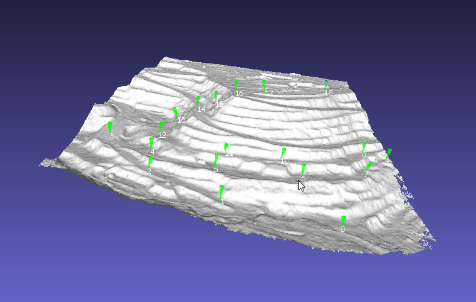

VR on a model following a path
created: 2019-07-06 modified: 2019-07-28Introduction
A-Frame is a really nice and easy to use framework for building VR applications. Here, we use it's capabilities to build a very simple system to build tours over 3d models with a great added bonus: it is mostly multi-platform. I haven't had the opportunity to test it on a VR set, but it works fine on my phone and should work OK with most glasses.
It seems to work better with Firefox on phones, but you mileage may vary.
Thanks to josepedrodias apud ngokevin for the along-path component that really did the rest of the work. This script assembles the html page using the path drawn on MeshLab and user input on scene geometry and time.
You can either use its javascript version on this page or an older python script: aframe-path.
How to
You will need your 3d model in either .gltf(ia) and a format that MeshLab(ia) can open, such as WaveFront .obj, or just the .obj file by itself. A-Frame recommends using .gltf, though, so it might be a good idea to get it if possible.
Here we'll use the Quarry Slope model from DronWork downloaded from sketchfab.
Open your compatible file in MeshLab, and using the point picker mark the points in order over which you would like the camera to follow:
Save the points as a .pp file, and finally use the form bellow to generate the html:
The most important parameters are probably camera height and duration. As the path is generated from the coordinates of the picked points on the model, It doesn't really do any collision detection on the mesh, and without some height above the path it will just hug and cross the ground. Duration is the time in seconds the camera will take for the whole path, five minutes by default.
Scale is an extra parameter that allows you to change the size of the model relative to the user, making it look bigger (if more than 1.0) or smaller. Making it smaller, combined with a long duration, may help in avoiding motion sickness. You will really have to experiment to figure the best parameters.
With this, you'll now need to host the page and 3d model1. A simple way is using python's builtin http server over the local network:
python -m http.server
It's useful to check the results on a computer before trying on a phone or VR headset, and with this you can just open your browser on the given port (by default, 8000, so localhost:8000 should work). When you're satisfied with the results on a 2d screen, you can find your local network ip and try it on a phone.
Just a heads-up: it can take quite some time to load the model on a phone. Try and wait a few minutes in case you think nothing's happening. Another way is to use a local server on your phone, which should make the loading much faster. I have used Tiny Web Server for this, it works really well and has no ads.
1. By default, the 3d model will have to be on the same level of the index.html that was generated,
that is, on the same folder. If needed you can just open the html and change the src on
<a-asset-item id="model-data" src="model.gltf">
to whatever structure you'll need.
↩